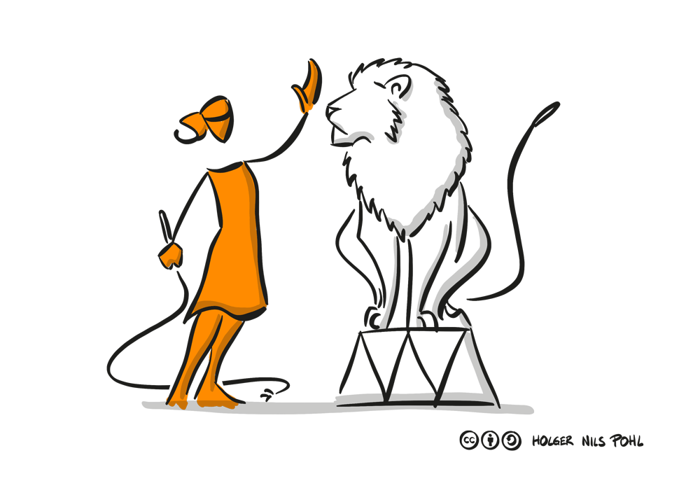
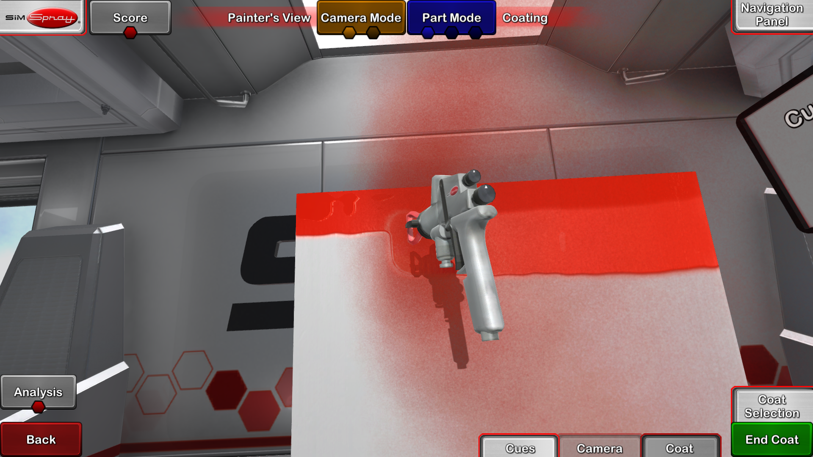
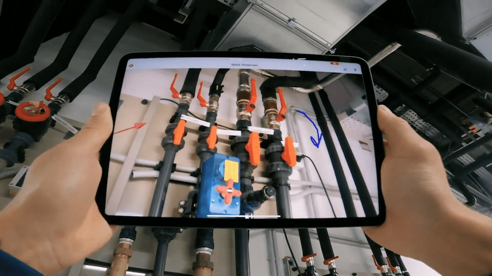
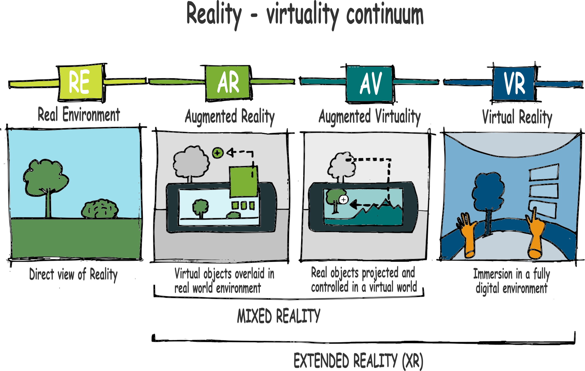
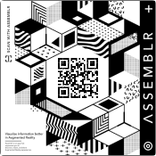

Introduction

You are standing in a glass box with a spray gun. The box gets wider and turns itself a large car industry workspace. After training you do not have to wait until it gets dried. Also, you do not have to sand the part to repaint again for the next run.
You are in front of a flat screen following a path with your welding gun and the training tool will follow your hand and measuring the distance, the angles of your hand and the traveling speed of the gun. Before this tool, nobody could improve motor skills so fast and accurately, because of the lack of instant feedback.
We find ourselves in a rapidly emerging technology field. Virtual Reality headsets, fast and reliable devices do the magic: you feel as if you were there. You could wander about in the ancient Rome, watch birds fly by, stand by a roaring fire and gaze out the windows. The professional audio tying it all together. It feels real. Moreover, it is precise. Educational simulations are developed to follow very tiny movements of your fingers to proceed medical operations, they teach manoeuvering large cargo ships, help memorizing safety protocols, driving vehicles in terrains in deep forests or handling construction cranes even in strong wind at 200 meters from the ground with high fidelity. And it is getting cheaper each year. This is a good news in vocational training. The high tech high precision learning is not a privilege of astronauts anymore.
About this handbook
 This Handbook on Digital Reality in Vocational Education (DR in VET) is dedicated to teachers, trainers and decision makers in vocational education systems, to help to get familiar with digital reality tools and systems when you plan to implement them. Last but not at least the book is dedicated to the young generation breaking new ways in teaching and learning.
We wrote this book for you because we'd like to :
- show you how VR devices can broaden the horizon
- Introduce the wide range of digital reality solutions
- tips on how to choose the most appropriate solution.
- offer tips new ideas to make learning delightful and funny
- Guidelines for teaching with and implementing digital reality solutions.
Assumptions
 Before we dive into the world of Digital Reality, we should say a few words about reality in vocational education. Some training centers are well equipped and have numerous well trained Digital Instructors. Most of them, however, are far from being aware of the whole range of opportunities digital realities offer. To be realistic, we assume you may work in a school in a mostly centralized educational system with limited influence and resources. We detail typical situations later on in the chapter four "Obstacles".
Before we dive into the world of Digital Reality, we should say a few words about reality in vocational education. Some training centers are well equipped and have numerous well trained Digital Instructors. Most of them, however, are far from being aware of the whole range of opportunities digital realities offer. To be realistic, we assume you may work in a school in a mostly centralized educational system with limited influence and resources. We detail typical situations later on in the chapter four "Obstacles".
We made assumptions about your digital knowledge. We assume that you as a teacher have at least a passing familiarity with Virtual Reality (VR), Augmented Reality (AR). You may have heard the terms or seen someone trying out a VR experience at a mall or retailer. We assume that you have a certain experience of using learning management software (LMS) such as Moodle, or Google Classroom. You use or are aware of social media such as Facebook or Instagram. You used or saw using videoconferencing tools such as Zoom or Microsoft Teams. You are capable to install, run applications on smartphones and personal computers (PCs).
Also, we have assumptions about your students. Your students may fall into these broad age categories:
- Youngsters (14 to 22 or so)
- Adults who are obliged (or want) to refresh their skills
They may have very different background coupled with numerous attitudes:
- Lowest social status with no support and lack of motivation. They come because they did not find anything suitable.
- Low but not very low social status with a remarkable support to break out. Gifted students with help of teachers or parents for example.
- High social status with strong commitment. For example, coming from a traditional crafting or artist family, or, as an adult, choosing a second career path.
The education or training process usually lasts three years which is taken mainly in a dual system.
How we organized this book
 This is a handbook, planned to look up things in it occasionally. We list ideas, how-tos, tips and tricks and best practices, hoping that the topics we cover will help you and your students to improve and be happy with their career. We also assume a relevance order on what you may be interested most. That is why topics related to Augmented Reality and Virtual Reality got more weight in this book than LMSes and videoconferencing.
This is a handbook, planned to look up things in it occasionally. We list ideas, how-tos, tips and tricks and best practices, hoping that the topics we cover will help you and your students to improve and be happy with their career. We also assume a relevance order on what you may be interested most. That is why topics related to Augmented Reality and Virtual Reality got more weight in this book than LMSes and videoconferencing.
The book is divided into five parts as seen on the contents to the left. In "Getting Started" we
Signs
Sidebars
The right sidebar will add more details broken down to tabs: "producers", "teaching", "best practices" (still dont know the fourth)
Simulations in Education

1. What is Digital reality?
IN THIS CHAPTER
- Understanding digital reality terms
- Understanding the use of digital reality in education
- List some related terms
- List solutions ranging form cheap but clever to full scale ones.
Digital reality (DR) is often used as a general term for all type of immersive experiences, including virtual reality (VR), augmented reality (AR) , mixed reality (MR), and extended reality (XR). In this book Virtual Reality means an immersive computer-simulated reality that creates a physical environment that does not exist. Virtual environments may resemble real places (such as a workshop area or a cockpit of a crane) or imagined ones (the deck of the Titanic), they are not in the current physical environment.
Figure 1-1 shows an example of a VR environment. It’s a screen shot of a professional painting simulator.

On contrast, Augmented reality is a way of viewing the real world and adding extra content ( augmenting) to the real world visual. The main difference between VR and AR is that AR modify the real visual instead of simulating a visual that do not exist in the current reality.
Originally, in AR, the computer-generated content is an add on on a separate layer that does not communicate the real world content. Now, however AR solutions tend to include interaction with the real world objects and this blended solution is often referred as mixed reality (MR). For the sake of simplicity we will refer augmented reality as an umbrella term that cover mixed reality too.
Figure 1-2 shows an example of AR. 
Figure 1-3 shows the entire reality - virtual reality continuum

Augmented reality in Education
AR is often adopted to help students with complicated subjects. For example, in subjects requiring high spatial ability AR can play important role. Another application of augmented reality in education includes teaching global perspectives through virtual field trips.
Currently, only a few schools use augmented reality in the classroom. The main reasons are:
- Bulkiness of AR equipment
- Quality of AR educational content
- Concerns over its value
- Lack of proper funding (i.e. AR capable tools or headsets are expensive)
HERE VALUABLE INFO with links and descriptions
Benefits of AR
AR can have a significant impact on learning environments. Student interest soars with the opportunity to creating content. AR technologies can allow them to add to valuable content, create virtual worlds. Classes that exploits AR can help students become more involved and collaborate.
AR can help memorize complicated processes. For example, instead of just presenting photographs on a projector showcasing typical mistakes in creating an artifact, a teacher can use AR technology to make memorable connections that lead to failure or success. Moreover, AR technology helps teachers create lesson plans with experiences. Students can carry out physical activities instead of watching a demonstration. This approach can help with sensory development.
There are concerns using AR in classroom. One of them is lack of quality content for vocational education. However, with AR technology you can create your own material. The other concern is cost. One cost is related to the hardware that is decreasing as smartphones getting stronger and able to run AR apps. Other cost factor is more significant: time devoted to learn and experiment to introduce AR in classroom.
To lower concerns on cost and content we gathered few tools and practices below:
AR Tools
Assemblr

The Assemblr Studio is an app that you use via your computer's web browser. The 3D library is notable with animated objects and many educational items to include in your class. The platform is simple to use, and it allows more personalizations than many of the other tools. The free options are acceptable for many classrooms, and the cost to upload a customized trigger image (also called marker) is affordable. View my AR experience using the Assemblr app by scanning it.

Steps:
- Go to Assemblr Studio and find the browser based application. You may need to register for free.
- Select “Create New Project” and give your project a name.
- Add the 3D objects, pictures, or videos you want to include in your experience.
- Place and modify the items on the marker area to customize the experience.
- Select “Publish” and download the marker or share the link to view your experience.
- You may download the application to your smartphone to create AR materials.
Cost: Free with the QR code Creation Platform: Download application on Ease of Use: Easy with added optional Features: Use your images or videos, a large and animated 3D object library, 3D objects can be uploaded with a subscription (otherwise 8 MB is the file limit)
EyeJack Creator

The EyeJack app is one of the easiest platforms to use because it’s essentially limited to adding a short video on top of a trigger image. The application must be installed on your computer. An audio upload is available to include a voice-over or ambient sound. Watch the video to see how easy it is: https://eyejackapp.com/pages/panels
Steps:
- Download the EyeJack app onto your computer.
- Upload a trigger image (JPG or PNG file).
- Upload a video, GIF or PNG to layer on top of the trigger image in the augmented reality experience.
- Keep the QR provided to view in the app.
- Download the EyeJack app on your mobile device (iOS & Android).
- Open the app and select the eye at the bottom of the screen. Scan the QR code (found in step 4) and then view the trigger image.
curl "http://example.com/api/kittens/2" \
-X DELETE \
-H "Authorization: meowmeowmeow"
<code></code>***
Halo AR
The Halo AR app is a new way to create augmented reality within the mobile application. In a few easy steps, students can build experiences on images by uploading or capturing a picture and then layering an AR experience on top of it. The AR layers can be from photos, videos or 3D objects on the mobile device or found in the library of content in the application. After the experience is published, those that follow you can view it in augmented reality. Explore the example of my book coming to life in augmented reality using the Halo AR app.

WebAR

The WebAR resource is a favorite tools of many because it uses WebXR to make all the magic happen in the browser. Without the need to download an app, it makes the experience run much faster.
Steps:
- Go to mywebar.com and select “Sign Up” to set up an account.
- Select “Add New Project.”
- Give the project a name and select the type of AR experience you want (QR code is free), then select “Create.”
- Upload or use the content available in the library to layer on the QR code.
- Select the save image and scan the QR code with a mobile device.
Cost: Free for QR code Creation Platform: Web-based Ease of Use: Easy with added optional Features: Use your videos and 3D object files, large 3D library on the site, added interactions in the AR experience
VR Solutions
here Our stuff will come
Ideas and good practices
Here you find definitions and links for distance learning, we list here simple but clever solutions to gamify materials, entertain and teach students with help of Digital Reality on a relatively low cost.
Distance learning formats
These types of distance learning include:
- Video conferencing Video conferencing is a meeting where participants use video to connect over the internet. Using tools like Zoom, Blackboard Collaborate, Adobe Connect, or other conferencing software, teachers and students interact together no matter where they are located. See examples here and here
- Hybrid distance education This format combines synchronous and asynchronous methods. Students receive deadlines to complete assignments and exams. They maintain contact with their instructor. Yet, they work at their own pace. As students progress, they gain access to new modules. A DRinVET own method is introduced here. Another remarkable example is here
- Open schedule online courses Such courses provide students total freedom. To complete coursework, students receive online textbooks, and other materials. Students are given a set of deadlines. It requires significant self-discipline and motivation. See an example here.
- Fixed-time online courses The most common format for distance learning is "Fixed-time online courses". In this format, students log-in to the learning site at designated times. They must complete pre-scheduled classroom activities at a specific pace. These activities often include chats and discussion forums. Fixed time online courses encourage student interaction, but there’s little room for self-pacing.
2. Digital Reality in VET
What are the advantages of the digital reality in vocational education? Teaching new things? Doing the same quicker, deeper and for more students? Or doing the same as before but cheaper? Or just reducing the risk of accidents or health threatening actions? Or all of them together? Can we measure effectiveness? In this chapter we gathered the most important advantages. Do not forget however, none of the virtual reailty tools can substitute real tools. They can complement reality but very seldom substitute them. How can increase effectiveness in this hybrid environment? This is the question the chapter answers by listing advantages of Digital Reality in vocational education and training.
Customised and detailed progress
Egyéni tempójú tanulást tesz lehetővé, saját profillal, személyre szabott visszajelzéssel
Avoiding early bad routines
ide jön a hegesztés példája - rossz mozdulatok hamar kialakulnak, nehéz felfedezni őket és nehéz kijavítani őket. ehhez képest a hegesztő szimulátorok a kéz tartási szögét a haladás menetét
Corvering full spectrum
Savings in materials
Savings in administration costs
Green solutions
Health risks decreased
Prestiege
Motivation by gamification
Selection with DR tools
3. How to choose
To select the right immersive educational solution, you need to be aware of some technological aspects. First, you should have a close look at the hardware. Simulations differ in the system that tracks human motions, then digitalises them and trasfers signals to the screen or the oculars. These differences are very important when you try to find the best solution for your school.
What types of sensors the device works with? Light or ultrasound? Can the signal be disturbed by envinromental changes? The curtain in the classroom moves and the light changes in a sunny afternoon and you have to recalibrate. Are there other machines using ultrasound nearby? If yes, one of the machines may end up in the cellar. Here is a specific example from welding. An important difference of "cheap" optical motion transmission system: it cannot realize and display the weight loss of the electrode during welding. It only senses that the end of the device is in front of the workpiece, but it cannot simulate the weight loss of the welding material in real time, thus teaching poor movement coordination.…
What is the reliability and lifespan of the motion tracking system? Needs to recalibrate soon? Goes wrong after a hundred students? Read reviews, ask other customers, negotiate with the producer to guarantee a good service level. Try to be as specific as you can when negotiating service levels such as availability of service, deadlines. The motion tracking system is the soul of the hardware. It might be cheap at the time of buying but may cost lot more afterwards.
Integrability. Now, see the software. Is the simulation automatized enough? In other words, does simulation allow you to learn without a constant engagement of a teacher? The main goal is not only to provide "realistic" visualization, but give a pedagogical structure. Through it, the device itself can teach the correct coordination of movements for the practical application of the skill as quickly and accurately as possible. Some producers sell yet unexplored solutions, which have serious shortcomings and limitations. One sign of the inexperience is that its use still requires a permanent teacher supervision, which means the complete engagement of the practical instructor while using the simulation. Thus, in case of welding for example, the realisable savings are reduced to only the materials and gases to be used in the training, and the wage cost savings achieved by offloading the instructor cannot be counted*.*
Without a good pedagogical system, the simulator is useless in vocational training, because just as in the traditional training, the student ,if left alone, can develop, "bad habits" that are difficult to correct afterwards.
Some manufacturers do not have a record of how the simulation can be integrated into practical training in either school system or adult training and the extent to which savings can be realized. Thus, the return period of the product cannot be calculated or estimated.
Can the simulation improve concentration skills directly and individually?
Concentration means control of attention. It is the ability to focus the mind on one subject, object, or thought, and at the same time exclude from the mind every other unrelated thought, ideas, feelings, and sensations. Is the software suitable for measuring users' concentration ability and improving their individualized ability? This is an important aspect of a skilled worker that he can constantly concentrate on what he does. And the development of this ability is very much needed even in school. Ask the manufacturer to show you specifically how the device and its software measure focusing skills. Does it provide systematic training with sessions? Does it show improvement with numbers? Can the softver give personal profiles for indiviudals in concentration skills development?
Knowing the clients The last aspect is the human factor. An important selection criterion is also the depth to which the distributor of the prodcut knows the needs of the schools. They supposed to have experience in training. They should have new ideas to support the school in integrating the simulation into practical training, based on their practical experience. The real experts are in daily contact with skill trainers, so they can provide right instructions and information about the effective ways of integrating simulation, even online.
It is therefore worth examining the existence and clear applicability of the software that performs important analyses for the instructor from the point of view of the management of the training, because any differences will slow down the problem-free synchronization in the virtual environment with the virtual and real practical training.
These findings were made in the framework of a European project, VIRTWELD, based on a detailed comparison of each solution.
4. Obstacles
IN THIS CHAPTER
- Step back and see your organisation
- Understanding factors that works against change
- Give ideas to avoid traps in implementation
Organisation Development perspective
Implementing brand new ideas is a struggling process even when the expected outcome is obviously delighting when we look back. Think of the attitude towards new inventions such as the telephone " People admitted that telephones were ingenious contraptions and wondered just how they worked, but they no more thought of getting one of their own than the average man now thinks of getting an airplane. As a matter of fact, for a long time they were of little use in a home. Since almost nobody had them but brokers, there was no one to talk to.” (New Yorker, 1933)
[1] https://www.theatlantic.com/technology/archive/2015/09/when-the-telephone-was-dangerous/626742/
Before we put on Virtual Reality glasses, we'd better step back and put on another one, the Organisational Developer's (OD) spectaculars. We humans do not like change so much and do a lot to regain the status quo. With careful planning however, a good project team can avoid the most common traps that work against change. That is why we start with the question:
What is your situation?
Are you a teacher in a public school? Or do you work in a private skills center? Here you will find the most frequent situations we met. We tailored the information in this part according to the needs and opportunities we learned from interviews of teachers and directors of private and public schools. We hope that by browsing through the types below you easily find solutions or how to-s to implement your Digital Reality solution.
Situation one: Public Schools
The most common situation in public schools is that modernizing is a struggling process. Resources are limited, there are a lot of students, the structure of the traditional teaching is strong and reluctant to change. There are cases when a school invests in a simulator that ends up in the garage eventually. Unpacked. Our interviews revealed numerous traps slowing down or even preventing a breakthrough.
- Attitude The school staff may have different attitudes towards new solutions. A few enthusiastic teachers may have seen digital reality solutions at a fair, and managed to convince the director to buy one. But what do the other teachers think? The ones who just came to realize right before the beginning of the semester that they have to learn a new skill and on top of that, they must reorganise their good old ways of teaching, risking their efficiency. Who wants that? May the new tool reveal that some parts of their skills are outdated? Or do they have only a few years left until retirement and have no intention to learn new things at all? They may be enthusiastic. Or overwhelmed. Or jealous. Or very skeptical. In short, you must consider the possible attitudes of your colleagues and form a good sales plan for them in advance.
- Motivation Lack of intrinsic motivation may result in bad choices. Government directives, for example, may suggest to invest in new tools. Directors may realize that they have unspent items in the grants for the year so they decide to buy digital boards, a simulator with a VR glass and LEGO robots. But where should they install them in the building? Who will do the programming parts? And where should they put the special tables for the robots? And they should rewire the wall in a classroom to triple the electric sockets available. On what extent the curriculum should be altered and who will rewrite it? Do they need new special expertise? On the top of that, who will sell the changes to the staff? There is a chance that the smart tables will never be switched on, the LEGO robots will be found in glass boxes at the end of the corridor, and the simulator will be used only in marketing events. The root cause is the lack of motivation. If there was no money granted, nothing would happen. This is not good. Try to seek good and realistic goals that motivate your staff and the decision makers to find money for them and write a good plan to convince them!
- Reorganisation New tools often require new methods in teaching, new organisation schemes in the class, new timing, new logistics, new spaces. If, for example, a painter class has a brand new simulator, then there will be questions to answer: how many students can it serve simultaneously? What should the teacher do with the other students? How long will it take to restart with a different configuration for the next class or the next student? One hour long class will be okay or shall we allocate double hours ? Does the simulator have a one size fits all VR glass with adjustable buckles? If yes, should you have multiple glasses to avoid downtimes that comes with the readjusting to fit the next student head? And how to avoid virus infections using the same VR glass? Is the simulator transportable easily? If not, where should they be installed? Does it have infrared sensors? Will it work in a darkroom only?
- Maintenance There are two aspects here. One is the service level the seller may provide you in terms of costs of support, updates, planned and unplanned availability and spare parts. There are pricing plans that focus on your needs and after initial investments the majority of the support is almost free (software updates for example). Other pricing plans are the opposite: producers offers solutions for a relatively low price, but the updates and maintenance will cost higher. The other aspect, however, is your own maintenance ability. This is definitely an organisational issue, and needs considerable effort. You may have received a really good Digital Reality device and everybody was happy. Students love it, you love it. But if you are the only one, who thoroughly reads the manual, and regularly contacts the support guy, then you made a mistake. After a while you realize that you have painted yourself into a corner by accepting that the other teachers have no time or even worse, are not willing to learn the details of the configuration. And when you leave, the goes into a dusty cupboard in the cellar because nobody really knows how to set it up and fix it but you. To avoid this, you should regularly share your knowledge with your colleagues, invite them to training sessions or make a website with the common faults and their fixes. You may include teaching tips and tricks. Not long after you will realize that your contribution to the community will return in less stress and professional common knowledge.
Situation two: Skill Centers
Skills Centers typically work with small groups and can provide much more flexibility in the way they teach. In our experience, sill centers are very satisfied with Digital Reality solutions, because they can effectively teach new skills on the introductory level. If you work for a skill center, you probably have less issues to solve, but they turn to be more specific.
Skill Centers probably cover wide age groups. Your students may come with greater real life experience and may be skeptical towards Digital Reality solutions. One of the skill centers in a technical university experienced great enthusiasm generally, but also faced strong resistance towards simulators from older welders, because the simulators revealed bad habits in old welders' motor movements that was almost impossible to change. Skill center students may come from rural areas and cities and their background may be very different. Or they show up randomly for very different reasons - family problems, taking seasonal jobs, lack of principle to name a few.
There are big differences in skill centers. One of them focuses only on metal works and is located in a village and its students come from the nearby villages. Another is a new green field investment with huge open spaces for robotics, welding simulations, automotive industry or woodwork. The former competes for the students with other skill centers offering certificates that could be obtained quickly. The latter represents high quality elite education where the students compete to get in. The strategy should be present in investment decisions. If the goal is to give quick trainings and the training cycle is short, it would be favourable to search solutions with portability, simplicity, with less extras but massive spare parts and headsets, and good quality support with reasonable prices. If the goal is to give a full course there other factors emerge such as different machines for different purposes, capabilities for logging and comparing students performance, capability for learning without assistance to name a few.
Situation three: Singles
There is a specific situation: A jack-of-all-trades. A single teacher who had the opportunity to establish a room or two for several tools in a school. In years, he or she managed to buy a laser engraver, a few 3D printers, Arduino devices, Lego robots, PC-s and simulators. He or she had piled a tremendous amount of materials about using and teaching with these digital solutions. There is only one problem: the empire of one person is vulnerable. Does he have assistance? Did he have time to document the devices and best practices? The same applies here as in "maintenance" above: you should share your knowledge, invite others to training sessions and write documentation with teaching tips and tricks. Do not work alone if possible.
If you are interested in the principles of the instructor 2.0 you read on
Situation four: Manufacturers
In this last situation we step into the corporate world. There is a great interest to use Digital Reality solutions in schools maintained by manufacturers. The reasons are cost effectiveness, using much less raw material and the ability to teach industry specific standards. Caterpillar France, for example, is a large manufacturer company hiring a lot of welders. Some are directly hired by the company, others are coming from subcontractors. The company has several plants around the world and, most of them have a private training centre to train the newcomers and to re-certify the existing welders. They searched for a digital solution, in one of their plants, where 4000 people were working. They have around 130 new welders to train each year. The cost of the raw material for the training of these people was around 55 000 €. The welder spends 3 weeks in the training centre full time.
Every 2 years, the experienced welders must be re-certified. This is a one day session and it costs 10 000 € for 300 welders per year. During this day, the welder was not working in the plant. Caterpillar wanted to reduce its training cost with the same training quality.
They decided a to invest into a Virtual Welding Training system (VWTS) to reduce the training duration and then ensure that the skill of their welders was kept at least on the same level as traditional methods would provide. At the end, they saved :
- 30 000 € of raw material per annum
- 25 000 € of salary (for recertification mainly)
- The initial training time reduction implies that the welder will be quicker in a working situation. The financial benefit of this is not evaluated yet. This figure is on a yearly basis and so, they saved more than 55 000 € per year thanks to the digital realty solution.
- They also noticed that the trainers have more time available to work on other things while the VWTS solution is taking care of the trainees… In that way, they have free slots to find new investments in robots, develop new training processes, set up new training sessions.
This story is not new. It happened in 2008. Competition in cost effectiveness is a great driver.
Important Aspects
Typical users - with goals and conditions.
Benefits (Cost reduction, effectivity in teaching, )
Challenges in reorganization of classrooms, methods, skills attitudes.
Approaches in development
Introduce approaches in welding, then transfer the conclusions to other skills.
Producers
Key players and their strategies
5. Prospects
Technological prospects: I NEED INFO FROM VIRSABI
and pedagogical prospects (based on success stories and results)
Pedagogical Guidelines
Approaches
Here we will describe all the Approaches (connected) and say a few words of their implementation. Gamification to be mentioned with examples and reference to the gamification handbook.
Best Practices
Purely implementations and Success stories EACH must end with a conlusion
Links, demos, short notes on the right sidebar!!! (not only IO3 stuff...)
Challenges
Differences between approaches
Different products represent different approaches. Level of simulation, realistic tools or not.
Health and safety
Here the important aspects will come
Organizing Tips and tricks
for Grouping and keeping interactivity in online blended and offline situations.
Odd case scenarios
All the challenges such as strong resitance of a senior expert - or buying a simulator and not using it.
Instructor 2.0
foreword
Why this new role emerges
body text
dont know yet what comes here Specifications, examples, producers who has traings and gives you certificates... who are these people where yo
Glossary
All the neccessary expressions.
(for exeplaBlended learning now has at least three meanings: 1. in ABC classification in this book, 2. Online and offline classroom together, 3. Rotated use of simulators and other tools at the same time in Sorin presentation in IO3 )
Errors
The Kittn API uses the following error codes:
| Error Code | Meaning |
|---|---|
| 400 | Bad Request -- Your request is invalid. |
| 401 | Unauthorized -- Your API key is wrong. |
| 403 | Forbidden -- The kitten requested is hidden for administrators only. |
| 404 | Not Found -- The specified kitten could not be found. |
| 405 | Method Not Allowed -- You tried to access a kitten with an invalid method. |
| 406 | Not Acceptable -- You requested a format that isn't json. |
| 410 | Gone -- The kitten requested has been removed from our servers. |
| 418 | I'm a teapot. |
| 429 | Too Many Requests -- You're requesting too many kittens! Slow down! |
| 500 | Internal Server Error -- We had a problem with our server. Try again later. |
| 503 | Service Unavailable -- We're temporarily offline for maintenance. Please try again later. |